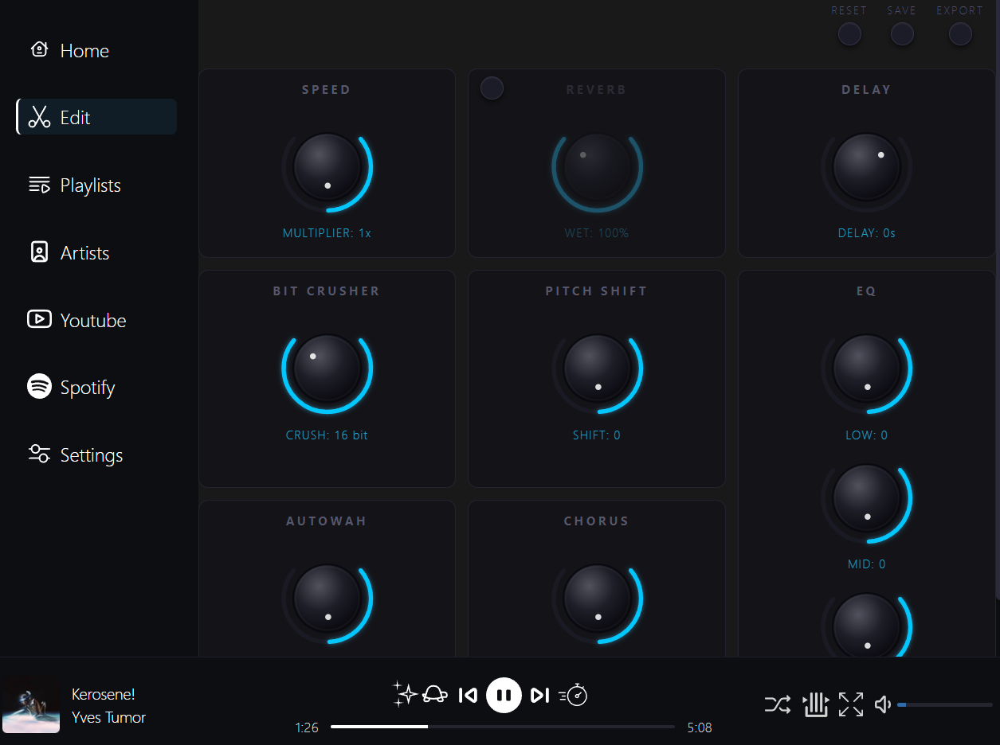

Persistent effect settings
Set EQ, speed, and reverb once per track. AudioShape remembers your exact settings automatically.
Free, open source music player with live audio effect editing such as EQ and speed control. Also includes a built-in YouTube/Spotify downloader.

Set EQ, speed, and reverb once per track. AudioShape remembers your exact settings automatically.
Browse your local library, edit in real time, and export files without jumping between multiple tools.
New improvements and bug fixes are shipped regularly in open source.
Yes. It is free, open source, and available on GitHub.
AudioShape currently targets Windows.
Yes. You can also try the browser version at slowandreverbify.com.
Free forever · Open source · Try the web app